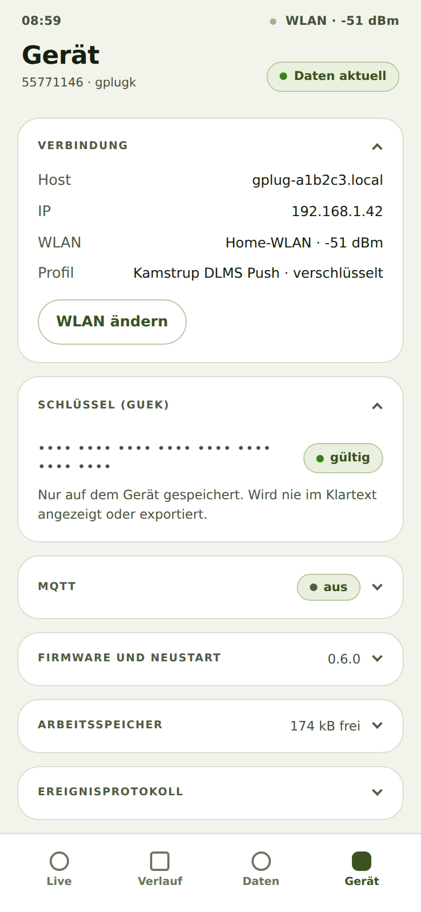

Adresse und Verbindung des gPlug nachsehen
Worum es geht
Als Besitzer eines gPlug möchte ich nachsehen, unter welcher Adresse er erreichbar ist und wie gut sein WLAN-Empfang ist, damit ich ihn wiederfinde und einen guten Standort wähle.
So geht's
- Tippen Sie unten auf Gerät. Die Karte Verbindung ist offen.
- Sie zeigt Host (die Adresse mit
.local), IP, das WLAN mit Signalstärke und das gewählte Profil.
Geräte-Tab mit Verbindung und Schlüssel
Woran Sie erkennen, dass es geklappt hat
- Die angezeigte Adresse öffnet die App auch auf einem anderen Gerät im selben WLAN.
Hinweise
- Die Signalstärke ist in dBm angegeben: −50 ist sehr gut, unter −80 wird die Verbindung unzuverlässig.
- Jede Karte im Tab Gerät lässt sich mit einem Tipp auf ihren Titel auf- und zuklappen; der Browser merkt sich das.
Geprüft mit dem Gerätesimulator am 30. September 2026.